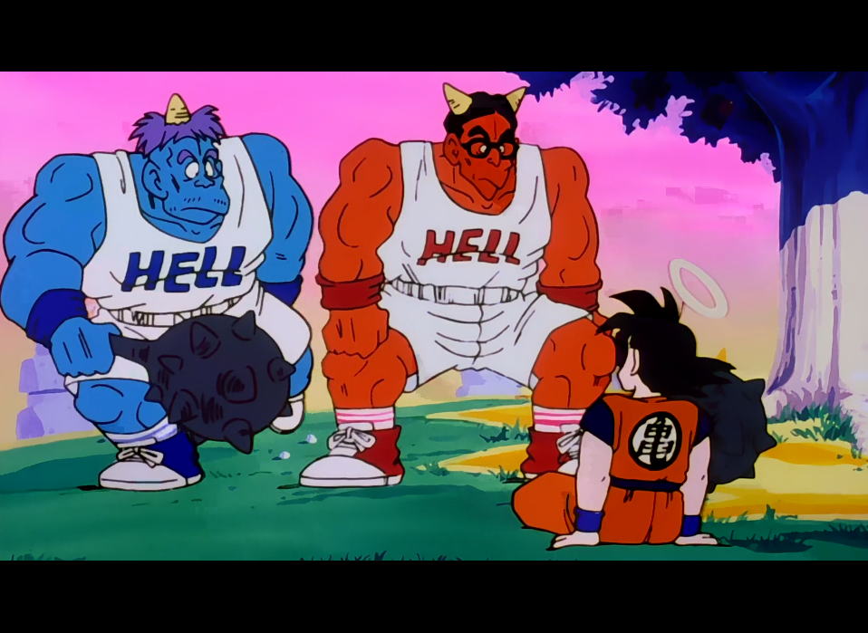
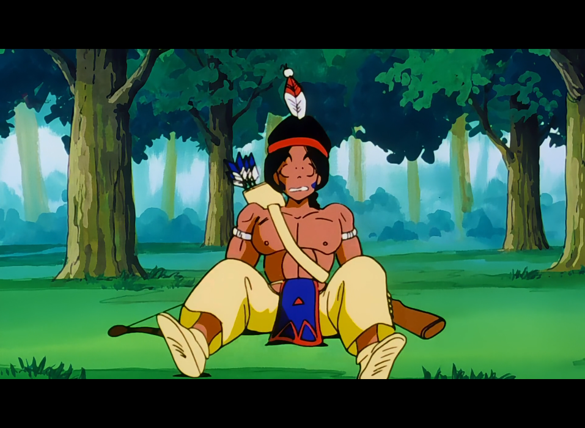
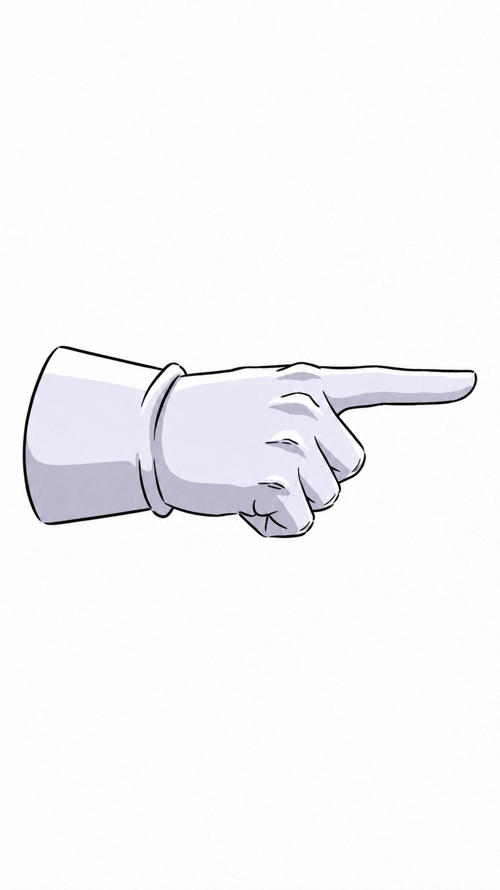

Son Goku vient d’atterrir en enfer ! Il y croise deux employés auxquels il demande comment regagner le chemin du serpent. Les deux hommes, amusés, décident alors de se divertir à ses dépens en lui proposant deux défis : il doit d’abord pousser le premier hors d’une surface délimitée, puis jouer à chat avec le second et parvenir à l’attraper. Goku relève ces deux épreuves sans la moindre difficulté, et les deux employés, tenus par leur promesse, sont contraints de lui révéler un passage secret.
Mais la ruse se retourne contre lui : le passage le ramène directement chez Yama, au point de départ du chemin du serpent ! Il n’a d’autre choix que de recommencer tout le trajet. Cette fois pourtant, il avance beaucoup plus vite, grâce au fruit doré qu’il a dérobé dans le jardin des enfers et qui lui redonne de l’énergie.

Cet épisode marque la toute première apparition de Gozu et Mezu, deux démons qui officient comme gardiens de l’enfer. Ils portent chacun un T-shirt sur lequel est inscrit le mot « Hell », qui signifie « Enfer » en anglais. Malgré leur côté loufoque et décalé, ils donnent l’impression d’être pris au piège de leur emploi, comme de simples employés de bureau soumis à des tâches administratives.
La course effrénée de Mezu fait immanquablement penser à celle d’Arale, l’héroïne du manga Dr Slump. Il s’agit très probablement d’un choix des animateurs, qui ont voulu injecter une dose d’humour supplémentaire et accentuer le caractère frénétique, voire franchement absurde, de cette séquence.
Upa fait ici l’une de ses toutes dernières apparitions dans l’anime, puisqu’il faudra attendre la fin de la série pour le revoir. L’épisode offre ainsi l’occasion de constater, de façon fugace, à quel point il a grandi, tout comme son père Bola.
La pêche que croque Son Goku à la fin de l’épisode constitue l’un des derniers clins d’œil directs à la légende de Sun Wu Kong. Dans le récit original, ce dernier dérobe en effet une pêche sacrée dans le jardin de l’impératrice d’Occident.
Bien qu’il s’agisse d’un épisode filler, celui-ci revêt une réelle importance, car il permet d’élargir une nouvelle fois l’univers de Dragon Ball. Akira Toriyama n’avait en effet jamais représenté l’enfer dans son manga. Or, dans la légende de Sun Wu Kong, le héros est lui aussi emmené en enfer par deux démons. Cet apport sera pleinement assumé par la suite : Gozu et Mezu referont des apparitions ponctuelles, notamment lorsque Jeese, Ghourd et Reacum tomberont en enfer après leur défaite chez Maître Kaio. Le douzième film reviendra d’ailleurs longuement sur cet univers jusque-là inexploité.


LISTE DES ÉPISODES